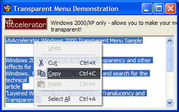

VB5 Transparent Menu Demonstration (32K)
VB5 Transparent Menu Demonstration (32K)
 VB6 Transparent Menu Demonstration (31K)
VB6 Transparent Menu Demonstration (31K)
 25 Nov 2002
25 Nov 2002
First Posted
 Subclassing Without The Crashes
Subclassing Without The Crashes

PopupMenu - Transparent Menu Demonstration
Demonstrates how to create transparent menus in Windows 2000 or XP using the PopupMenu object.
Windows 2000 and XP support all sorts of exciting new user interface effects, one of them being the ability to make Windows transparent. For more details, visit MSDN and search for the technical article "Layered Windows: A New Way to Use Translucency and Transparency Effects in Windows Applications." This sample demonstrates how to use the OwnerDraw facility of the vbAccelerator PopupMenu DLL to make your menus transparent too.
About Window Transparency
There are a number of techniques for making Windows transparent, however, the simplest is to change a window's style bits to add the new WS_EX_LAYERED style attribute. Once this has been set, you can use the new layered window API SetLayeredWindowAttributes to modify the alpha of the window (the alpha defines the window's transparency, between 0 for completely transparent and 255 for opaque.)
Here is a quick overview of the code you use to change a Window's transparency:
' Declares:
Private Declare Function GetWindowLong Lib "USER32" Alias "GetWindowLongA" _
(ByVal hWnd As Long, ByVal nIndex As Long) As Long
Private Declare Function SetWindowLong Lib "USER32" Alias "SetWindowLongA" _
(ByVal hWnd As Long, ByVal nIndex As Long, _
ByVal dwNewLong As Long) As Long
Private Const GWL_STYLE = (-16)
Private Const GWL_EXSTYLE = (-20)
'Requires Windows 2000 or later:
Private Const WS_EX_LAYERED = &H80000
Private Declare Function SetLayeredWindowAttributes Lib "USER32" _
(ByVal hWnd As Long, ByVal crKey As Long, _
ByVal bAlpha As Byte, ByVal dwFlags As Long) As Long
Private Const LWA_COLORKEY = &H1
Private Const LWA_ALPHA = &H2
Public Sub MakeWindowTransparent(ByVal hWnd As Long, ByVal alphaAmount As Byte)
Dim lStyle As Long
lStyle = GetWindowLong(hWnd, GWL_EXSTYLE)
lStyle = lStyle Or WS_EX_LAYERED
SetWindowLong hWnd, GWL_EXSTYLE, lStyle
SetLayeredWindowAttributes hWnd, 0, alphaAmount, LWA_ALPHA
End Sub
Note that this technique only works with top-level windows, so unfortunately you cannot apply it to individual controls.
Creating Transparent Menus
In order to use this technique, you just need to know the hWnd of the Window you want to change. So how do we use this for a menu? The answer to this is surprisingly simple. Menus are actually implemented internally in Windows using a specific class of window, however, unfortunately none of the Menu APIs actually provide you with this window handle. When you set a menu to OwnerDraw style, though, Windows passes you the hDC of the menu to draw onto. This means you can find the Window handle using the API call GetWindowFromDC (note: of course it is possible in future versions of Windows that this implementation could change).
Using the PopupMenu object makes it simple to create a transparent menu since you can set the OwnerDraw attribute for any menu item. This means that the object notifies you through DrawItem event whenever an item needs to be drawn, and one of the parameters you get is the hDC to draw onto. If you don't do anything in these methods, PopupMenu assumes you want the menu to draw in the default style so just gets on with it.
So having set OwnerDraw to true for all menu items, we can find the window handle by calling WindowFromDC during the DrawItem and then setting the window to the layered style if it isn't already. The only slight catch is that in Windows 2000 and XP menus can be animated when they pop open. If this style is enabled, the Window and DC that you get to draw onto whilst the menu is popping open is actually a temporary one which goes away. Therefore to ensure the menu gets to be transparent as soon as it opens, the code stops menu animations for the popup menu it displays using the PopupMenu object NoMenuAnimation setting.